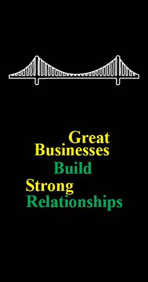

Relationships matter. Everyone knows that, but not everyone acts on that.
Great businesses are not built on great transactions; they are built on great relationships.
Great businesses build strong relationships – with customers, prospects, employees, alliance
partners, industry groups, suppliers, financial markets, regulators, media, stakeholders, potential
recruits, retirees/alumni, and the general public. On any given day, good relationships can open
doors, seal deals, put in some extra effort, say the right thing to the right person at the right time,
or just do favors that clear away potential problems. On the other hand, poor relationships can
cause problems, plant seeds of doubt, raise costs, cause delays, hurt quality, actually lose
business, and just cause general stress and headaches.
Great relationships do not just happen, they happen because you make an effort to show that you
care.
At Personius & Company, we believe that the smart use of promotional products is a critical,
affordable tool to build strong relationships. We help build strong brand recognition, express
appreciation to customers and employees, enhance value through purchase incentives, express
regret or apologies, and show interest, concern, and caring. We can help you build strong teams,
promote common goals, reinforce and reward success, and announce and promote new
initiatives, products, or services.
Great relationships are relationships that remember and help you when you can benefit most. We
help make great relationships happen.
Do you have a “great relationship” strategy? Personius & Company can help you make that
happen too.